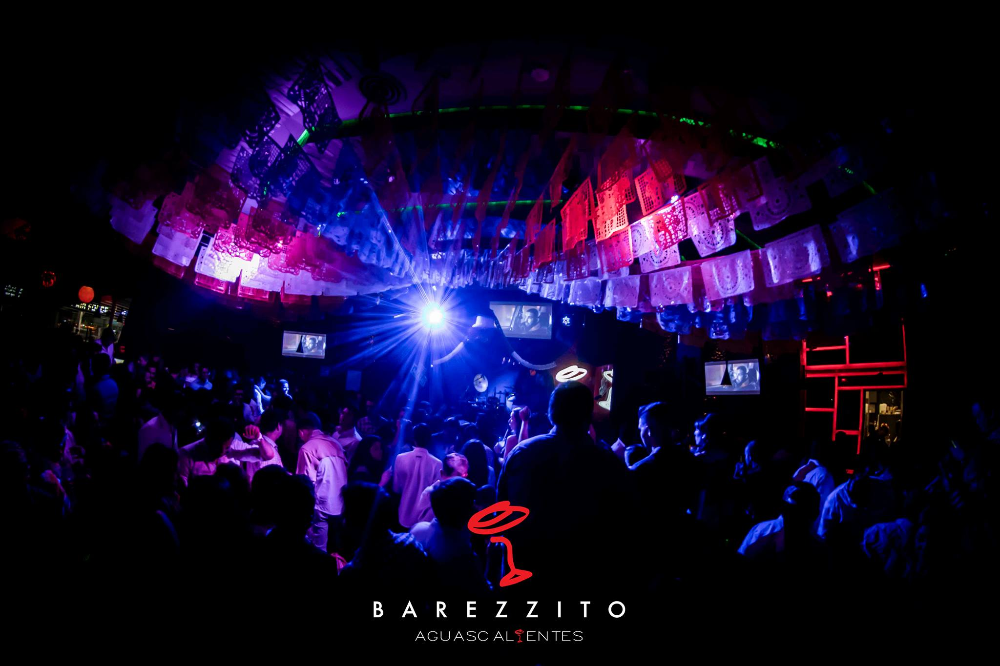
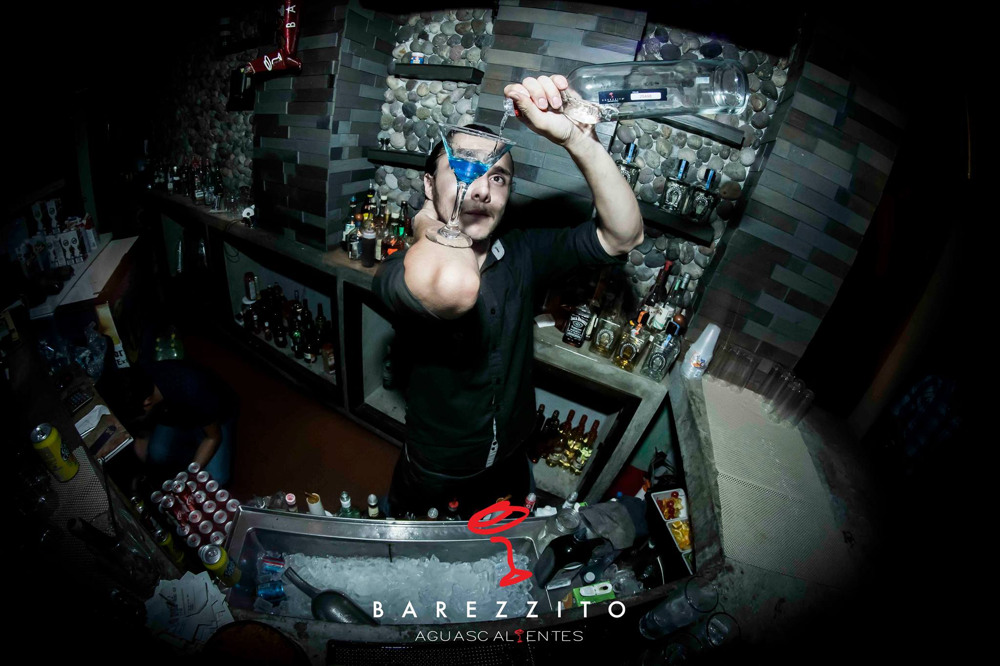

Barezzito
Porque nosotros conocemos las necesidades de las personas y una es beber, en esta sección puedes ver aquellos lugares especiales para ti, solo los mejores!
Reseña
Barezzito propone, Aguascalientes dispone. Al Norte de la ciudad, este lugar conocido simplemente como “Barezzito”, es un espacio en el que las constantes son la vanguardia gastronómica y las propuestas musicales. Más allá de ser el restaurante o cafetería de un museo, esta terraza sigue la línea y se vuelve una extensión del centro cultural dando a conocer propuestas emergentes tanto nacionales como internacionales que sacan a relucir sus mejores notas musicales en los miércoles de jazz, los jueves de rock y los viernes y sábados de DJs. El techo y pared de cristal ponen en evidencia las ruinas del Templo Mayor, mientras que enfrente, la arquitectura novohispana de la catedral contrasta con este lado rebelde. En el interior, la decoración es minimalista con mesas de madera y aluminio que se alumbran con velitas en las mesas y luces que van dirigidas hacia el escenario.
Este lugar es conocido también por ser versátil por el hecho de que es Antro-Bar-Restaurante y ofrece sushi con ambiente de bar y fiesta de antro. Por las tardes se dan cita alguna que otra señora Polanco, pero por las noches, la afluencia es principalmente de jóvenes de la escena cultural contemporánea, habitantes de los alrededores del primer cuadro de la ciudad, músicos, turistas o paseantes del renovado Centro histórico. Aquí no se pelean los tennis con los tacones ni los sacos de pana con los chongos o joyería fina. El plan consiste venir a escuchar música en vivo mientras tomas una cerveza, una copa de vino o degustas platillos exóticos de la cocina española y alguna de las recomendaciones del cheff como los pimientos del piquillo, calamares a la andaluza o paella negra. Refugio trendy al engentamiento del Zócalo capitalino con entrada gratuita a todos sus eventos.